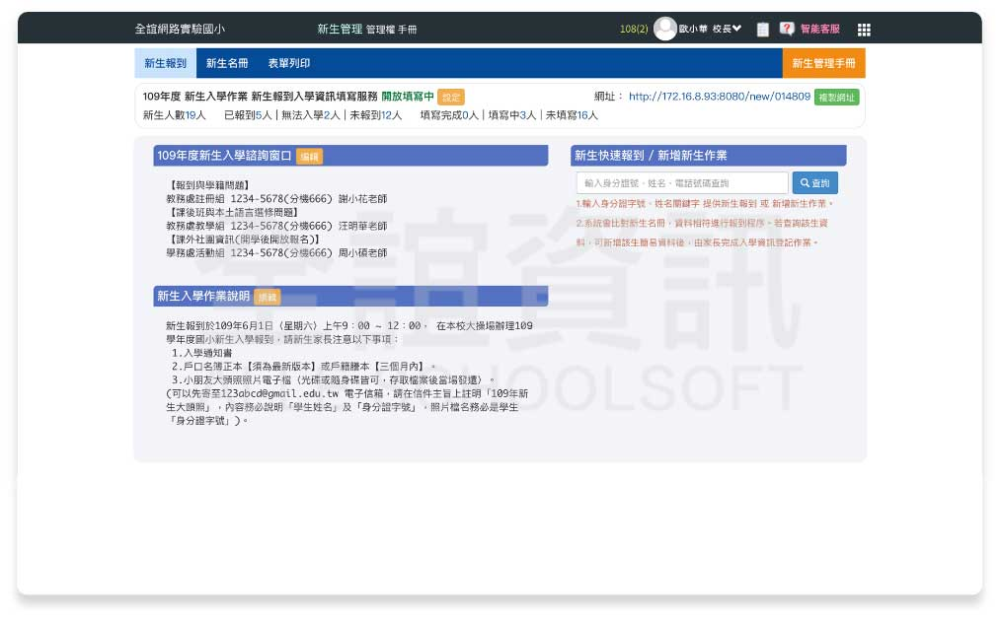

設計理念
Design Concept
為減輕每年學校新生報到所需耗費的人力，我們開發了新生線上報到平台，適用於手機、平板、電腦，讓家長不用親自跑學校也能報到，學校減輕大量行政工作，更讓教育局有即時統計數據可參考。
1.
新生名冊
匯入系統
局端匯入、入學通知
2.各校登入
自訂編輯
自訂問卷、報到說明
3.雙軌開放
線上 / 到校報到
到校報到後，家長仍可至線上填寫資料
新生報到三步驟
系統特色
System Features
手機電腦皆可使用
報到平台支援各式裝置，如手機、平板、電腦，皆可使用。
無需出門就能報到
在家就能進行線上報到，體貼家長，無需請假奔波。
資料匯入校務系統
家長輸入報到資料，日後匯入校務系統，老師免登打資料。

自訂問卷統計彙整
學校與教育局皆可線上自訂問卷，系統彙整匯出EXCEL結果。

即時掌握報到數據
教育局畫面即時掌握各區域、學校新生報到率。
列印入學通知單
有預設入學通知單，系統將自動匯入資料並套入通知單。
線上報到畫面
Report Online
（ 新生報到入口頁面 ）
隨時隨地報到
在家就能報到，節省家長寶貴時間。
各注意事項清楚明瞭
入口頁提供各校報到時間、聯繫方式、入學說明，清楚明瞭。
報到流程無紙化
全程使用系統填寫統計，環保省紙。
學校設定畫面
Setting Screen

學校端畫面
系統匯入新生資料
免手動輸入新生資料，教師減輕工作量。系統在報到結束後自動匯入新生資料。
校端自訂問卷，並由系統完成統計
學校自訂問卷，家長線上填寫。截止後，系統將自動統計並整合問卷名單與答案。
各項表單列印
有入學學生名冊、入學通知單、未報到通知單等等。
新生報到編輯畫面
編輯新生報到入口畫面，可設定報到諮詢窗口、入學作業說明等。

教育局數據畫面
Statistics Screen
即時統計新生報到概況
以學校、戶籍分類統計，清楚掌握各區、各校報到率。
列印入學通知單
區公所線上列印各區新生入學通知單。
設計問卷、統計彙整
局端設計問卷，全市統一發布並彙整填寫統計。
介紹影片
Movies
新生線上報到介紹影片
僅需30秒，介紹使用新生報到的優點與大致流程。 學校將不用再印製大量問卷及手動輸入新生資料。 家長也可以在家輕鬆報到！
客戶實例
Customer Experience
臺北市
國小
新北市
國中小幼兒園
新竹縣
國小
南投縣
國小
共 4 縣市
全市上線使用
型錄下載
Download
與我聯繫
Contact us